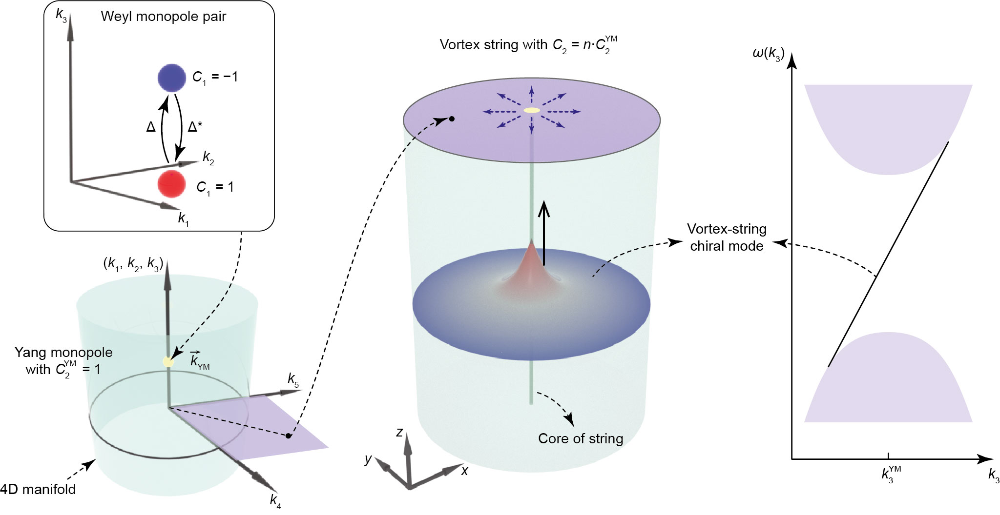
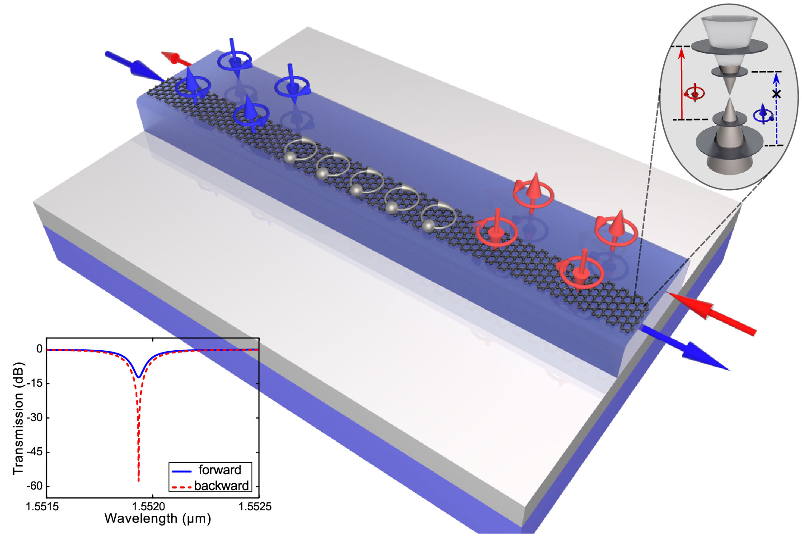

Selected Publications
Full Publications in Google Scholar2026

We report the first excitonic negative refraction. This work is featured in Phys.org, Mirage News, EurekAlert!, Sciencenet (科学网), 星島頭條, 明報.
2025

Interacting topological bosonic systems exhibit fundamentally distinct behaviour to their fermionic counterparts. We report the first topological parametric oscillators based on a Dirac-vortex nano-electro-mechanical cavity.
2024

Vortex strings are hypothetical topological defects in the geometry of spacetime in cosmology. We report the first experimental observations of vortex string chiral modes using a meta-material system.
2023

We report the first Dirac-vortex microcavity laser that harnesses an auxiliary orbital degree of freedom. This work is featured in Light: Science & Applications 13, 64 (2024), Phys.org, and Sciencenet (科学网).
2021

We report an topological system with auxiliary orbital degree of freedom. This work is featured in Nature Nanotechnology 16 (5): 487–489 (2021).
2019

We demonstrate topological photonic integrated circuits. This work is featured as cover article.
2016

We propose a new design of on-chip isolator using photonic spin-orbit interaction. This work is featured as cover article and selected by Optics & Photonics News (OPN), The optical Society's monthly news magazine, as one of the world's 30 most clearly communicated breakthroughs in optics in 2016.